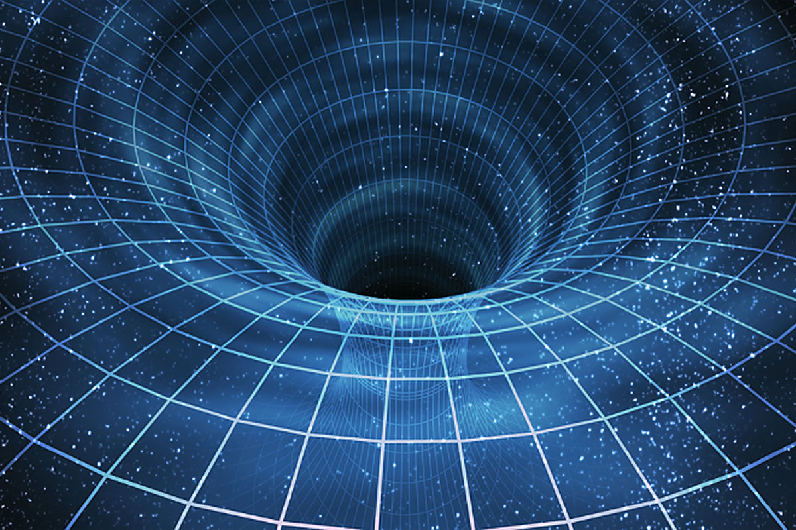
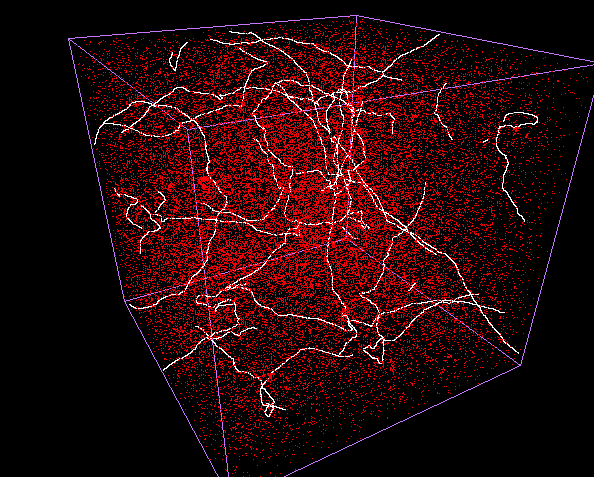

| Concept | Space-Time Geometry | Primary Scientific Purpose |
|---|---|---|
| Wormhole | A tubular bridge connecting two distant regions of space. | Hypothetical shortcut for cosmic space travel or time travel. |
| Cosmic String | One-dimensional linear cracks stretching across the universe. | Leftover remnants explaining mass distribution and early cosmic evolution. |